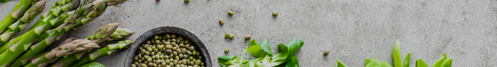

Red Ginseng
Nutritious Beverage
Gaesong ginseng has been cultivated using
eco-friendly agricultural techniques in Paju
100% six-year-old red ginseng concentrate!
The ginseng is produced as top quality at KDFA-certified GMP facilities.
Paju Jangdan is the origin of Gaesong ginseng
Paju Jangdan area near Gaesong was the first location Paju Gaesong red ginseng was cultivated. As Joseon’s Joo Saebung became governor of Hwanghaedo Province (1551), the cultivation method of ginseng was diffused to the Paju Jangdan area and it grew to become the production area of Gaesong ginseng. It is recorded in the Gupogeonsamdorok (九包乾蔘都錄,1888) that ginseng from Jeungsampo to Jangdan area of Gaesong was processed into white ginseng and red ginseng, and used as medicine in Korea. It is also introduced in the Hangooksamjeongyoram (韓國蔘政要覽), which states the scale and location of ginseng in 1908 in detail, that Jangdan was the original production location of Gaesong ginseng. The benefits of Gaesong ginseng from Paju became widely known overseas early through Gaesong merchants and grew to become Korea’s representative local product today.